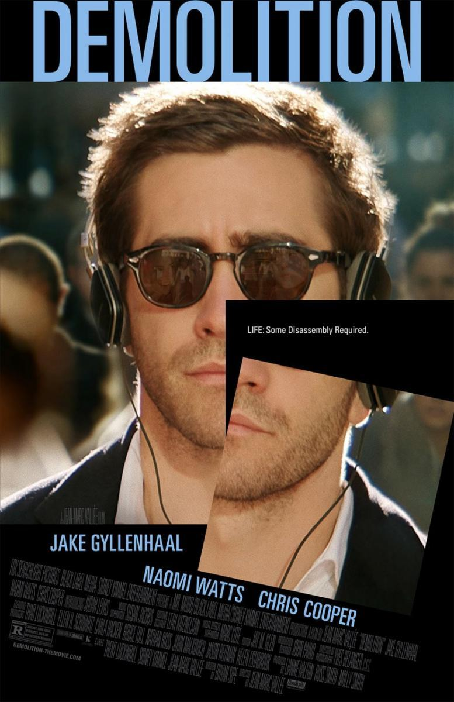

Demolición

Protagonizada por Jake Gylenhaal y dirigida por Jean-Marc Vallée, cuenta la historia de Davis Mitchell (Jake Gyllenhaal)
es un exitoso ejecutivo que sufre una grave desconexión emocional tras la repentina y trágica muerte de su mujer (Heather Lind)
en un accidente de coche. Aunque su suegro (Chris Cooper) intenta por todos los medios que se recupere, continúa bloqueado y
se dedica a desmontar compulsivamente toda clase de objetos. Gracias a la ayuda de Karen (Naomi Watts) y de su hijo, a los que acaba
de conocer, Davis empieza a reconstruir su vida.
Trainspotting
Protagonizada por Ewan McGregor y dirigida por Danny Boyle, cuenta la historia de Mark Renton, un joven escocés de Edimburgo, y sus
amigos son adictos a la heroína,lo que significa que viven fuera de la realidad, en un mundo aparte. Dentro del grupo hay un psicopata
alcohólico y violento, un joven desesperado, un mujeriego con un conocimiento enciclopédico sobre Sean Conneryy un entusiasta
de las caminatas y de Iggy Pop.

A pesar de que las peliculas de terror no son mis favoritas, Hereditary se ganó mi atencion por ser una pelicula con un contexto bastante
distinto a las demas peliculas de terror y con una tematica bastante particular.
Dirigida por Ari Aster, cuenta la historia de una familia, los Graham. Tras la muerte de la abuela y matriarca, que deja en herencia
su casa a su hija Annie. Annie Graham, una galerista casada y con dos hijos, no tuvo una infancia demasiado feliz junto a su madre,
y cree que la muerte de ésta puede hacer que pase página. Pero todo se complica cuando su hija menor comienza a ver figuras fantasmales,
que también empiezan a aparecer ante su hermano.